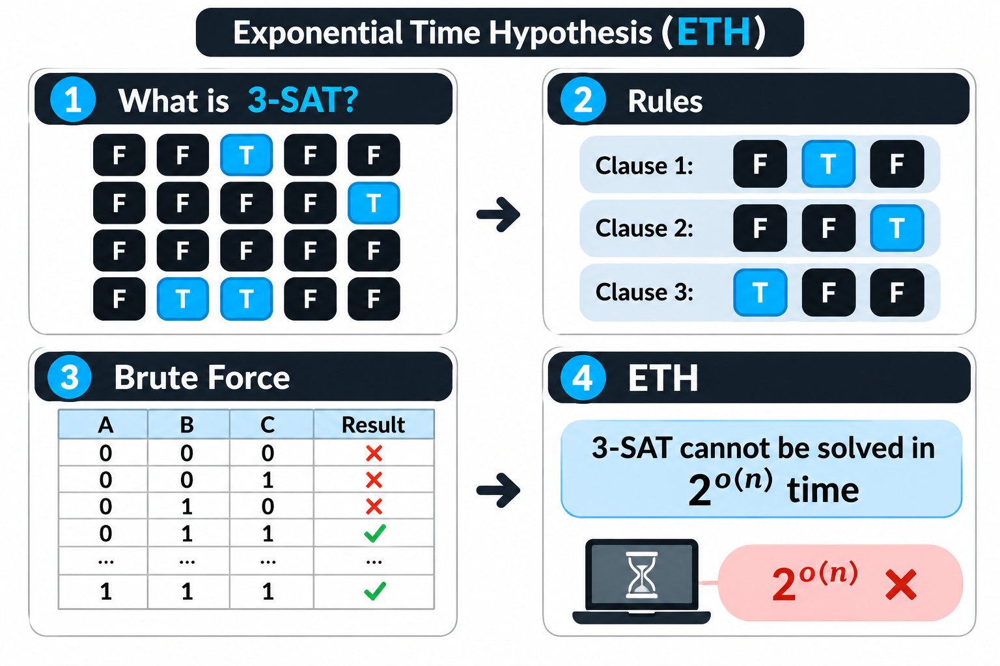

Python, C++, frameworks and databases belong to Applied Computer Science. Underneath it sits Theoretical Computer Science, which uses pen-and-paper reasoning to tell us what a computer can do and what it can never do. For cybersecurity, cryptography rests entirely on hard mathematical problems and assumptions from theory, such as prime factorization or the ETH. If the proofs say these problems are hard to solve, only then do we assume our passwords are safe.
What is the Exponential Time Hypothesis?
Anyway, in 1999 the scientists Russell Impagliazzo and Ramamohan Paturi put forward a hypothesis. Their Exponential Time Hypothesis (ETH) says that hard problems like 3-SAT need exponential time, , for any algorithm, and that nobody can solve them in subexponential time. Keep in mind that it is only a hypothesis. It is a temporary proposal, offered as a possible explanation, and it has not been proved. In short, solving 3-SAT (or -SAT) needs at least exponential time, , and no subexponential-time algorithm, , can do it.

The Control Board Analogy: What is 3-SAT?
Let me make this a bit simpler. Imagine a big control board with Boolean variables (switches), and each one can be True (on) or False (off). You are given a set of rules, called clauses. Each rule involves exactly 3 switches and says that at least one of them must be True. To start the system, you have to set the switches so that every rule is satisfied at the same time. That is the 3-SAT (3-Satisfiability) problem. With only 3 switches there are combinations. With switches there are combinations, and checking them one by one (brute force) would take an ordinary computer tens of trillions of years.
Why ETH Mattered for 27 Years
So no matter how many modern algorithms we build, 3-SAT should get exponentially slower as the number of variables () grows. In math terms, it needs at least exponential time, (for example or ), and an algorithm with subexponential time (for example or ) should be impossible to build in practice. For the last 27 years ETH has served as a foundation of Theoretical Computer Science. More than 800 research papers assumed it was true in order to prove lower bounds for different algorithms.
The New Algorithm: Subexponential 3-SAT
In October 2026, researchers at OpenAI showed that this core assumption of ETH is wrong. They built a deterministic algorithm that solves 3-SAT and any -SAT problem, and also counts the exact number of solutions, in subexponential time. The running time is . Since falls under (subexponential time), it directly refutes the main condition of ETH, . Until now, researchers checked the combinations one after another (search). The new algorithm turns the problem into algebraic equations and counts the solutions with algebraic methods such as Hermite interpolation and tensor network contraction.
From Brute Force to Algebra
Before, we had to flip the switches on and off one by one (search or brute force) to see whether every rule was satisfied. With the new method, we can find the answer by adding up the possible values of all the switches inside one huge polynomial equation. On the old board, changing one switch spread its effect to the other switches across the whole board. Now the board is split into small independent groups of variables, and from each group we only take a few short linear summaries (shared linear summaries, or measurements).
Does This Break Your Passwords?
This new research does not solve P vs NP. The RSA and AES encryption we use do not depend directly on 3-SAT, so your passwords cannot be hacked today because of it. In theory terms, the new algorithm can be called a "galactic algorithm". It only beats ordinary brute force when the input is astronomically large.
AI and the Future of Theoretical Computer Science
Some AI geeks say a human did not do this proof alone. An advanced AI did. AI has started to change the theoretical foundations of computer science, the basic rules of math under it. The AI that breaks a theoretical hypothesis today could find a new shortcut tomorrow for breaking prime factorization in applied cryptography.